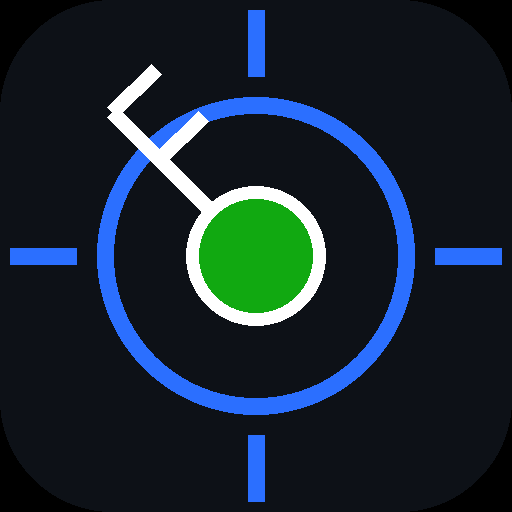

Vicinity
METAR / TAF for every station within 50nm
The only brand mark supplied by the source. A blue radar ring with crosshair ticks over a green (VFR) station dot and a white wind barb — the app in one glyph.